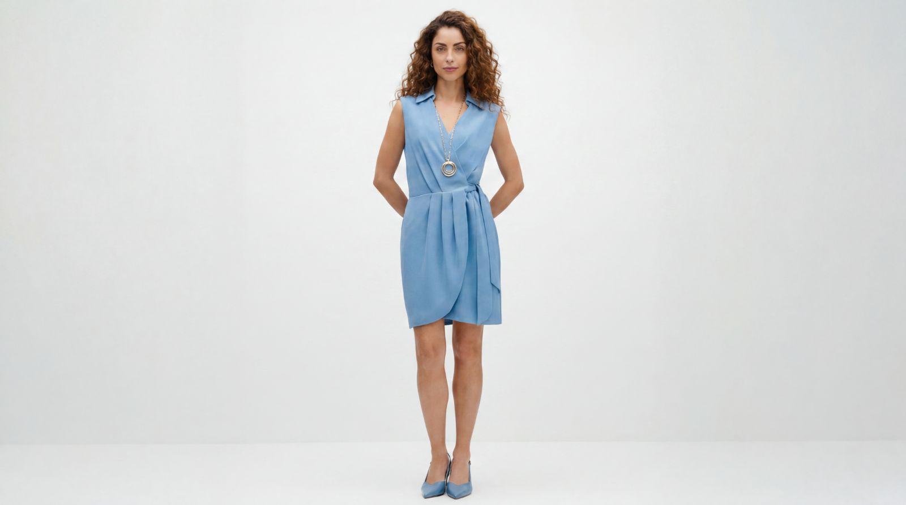

30+
Implementaciones realesEn medios, educación y comunicación.
Inteligencia Artificial aplicada a medios, experiencias y comunicación. Sistemas reales. Resultados reales.

Organizamos la inteligencia artificial en un ecosistema integrado que conecta talento, tecnología y estrategia para transformar medios, educación y comunicación en resultados reales y medibles.
Una selección de implementaciones, prototipos y productos desarrollados con inteligencia artificial para medios, comunicación, educación, automatización y experiencias digitales.
La IA no es una herramienta.
Es una nueva capa operativa.
Mi visión es construir la infraestructura inteligente que permitirá a los medios, universidades y organizaciones operar, comunicarse y crecer en la próxima década.
Así será el futuro
La IA no solo innova.
Genera resultados reales.
El impacto de nuestras implementaciones se refleja en el alcance, la eficiencia, la capacitación, la escalabilidad y en las nuevas posibilidades de comunicación que hoy son una ventaja competitiva real.
Ver resultadosTransformamos la comunicación con soluciones de IA que generan valor medible: aceleramos la producción, habilitamos nuevos formatos, fortalecemos la presencia institucional y llevamos la IA a la práctica real.
Si buscas crear ecosistemas inteligentes que transformen la forma en que tu organización comunica, produce, enseña y conecta, estoy listo para diseñarlo contigo.
Diseño e implemento soluciones de inteligencia artificial aplicadas a medios, educación y comunicación para crear ecosistemas escalables, eficientes y con impacto real.
No se trata de usar IA.
Se trata de crear ecosistemas que la hagan trabajar para nosotros.